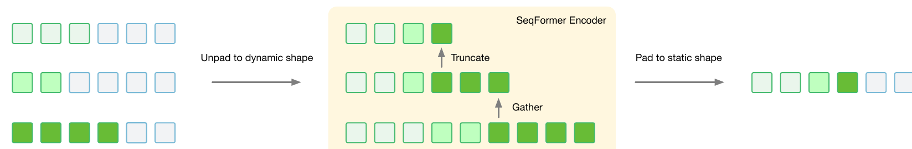
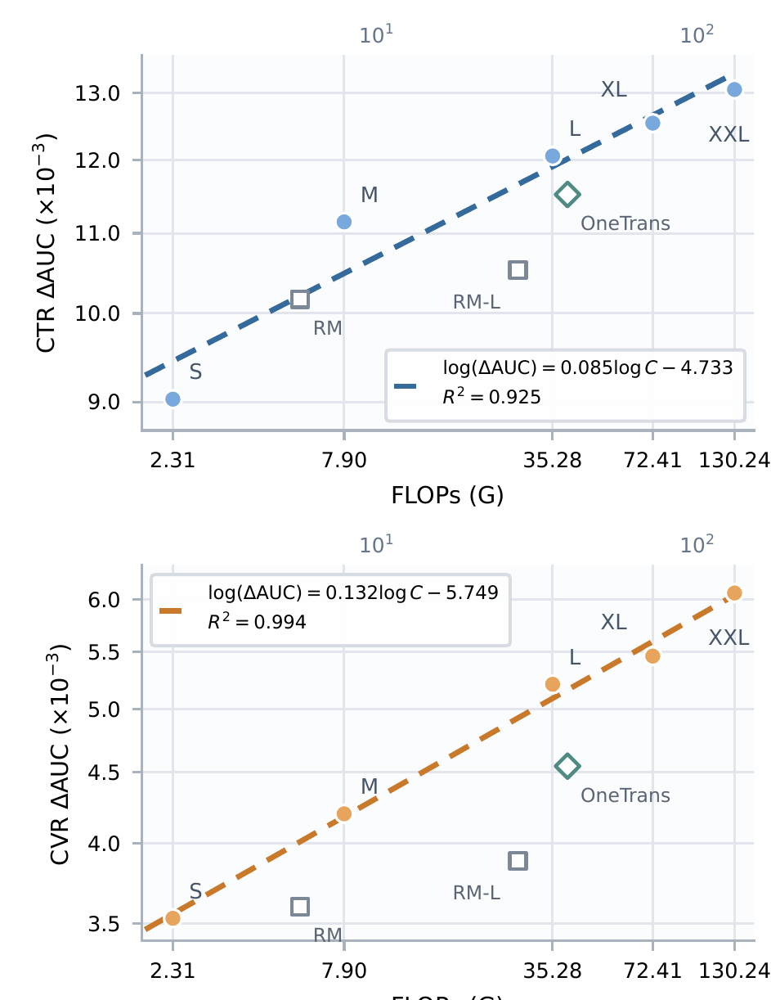
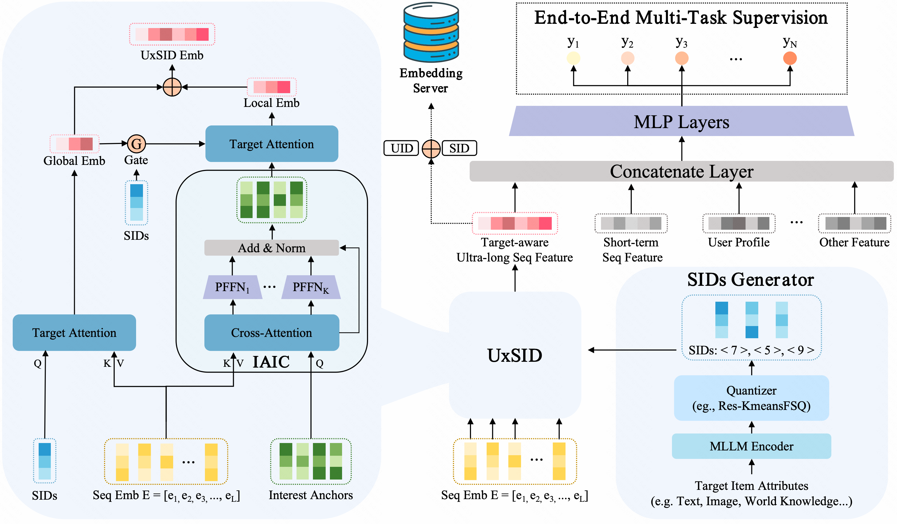

Contents · 8 sections
1What problem is it actually solving?2The big picture: three input streams, three kinds of blocks3Taking it apart: why each step is there4How much does reuse actually save?5Is it really better?6Where I think it falls short7How a recommendation or search team could try it8Bottom lineSHARE
Ranking teams should read this one. It answers a practical question: you want to scale both feature interaction and long-sequence modeling, but how do you scale them together so that extra compute actually turns into AUC, without giving up the serving advantage of encoding a user's history only once per request? The core idea in one sentence: user history flows only toward the candidates; it is encoded once into a K/V cache shared by every candidate, and on the candidate side the feature tokens alternate, layer after layer, between retrieving evidence from the sequences and doing feature interaction. The authors call the architecture HELIX (a ranking architecture from ByteDance's e-commerce video recommendation team). In TikTok's e-commerce video ranking, HELIX-L (the paper's mid-size configuration) lifts CTR AUC by 0.21% relative to the production baseline, while scaling that baseline from 210M to 1069M parameters bought only 0.04%; in a full-traffic A/B test, e-commerce video GMV per user rose 5.99%.
What problem is it actually solving?
Start with an illustrative scenario. A user opens the e-commerce video feed and the ranker must score 500 candidate videos. The user has two kinds of history. One does not depend on the candidate, for example the last 2,000 views and purchases; the paper calls these U-only sequences. The other is looked up with the candidate, for example "past actions in the same category as the current candidate"; the paper calls these U×C sequences (sub-sequences from hard search or soft search). On top of that there are several hundred non-sequence features: user profile, video attributes, context, cross features.
The industry has two ways to scale. One grows feature interaction, for example RankMixer-style models that cut heterogeneous features into tokens and stack token-mixing blocks; the other grows sequence modeling, for example deeper attention in the style of HSTU. The authors find that scaling only one axis turns the other into the bottleneck. The production baseline, RankMixer + Transformer, is exactly a two-stage design with one block for feature interaction and one for sequences: 5× the parameters and about 4.8× the FLOPs gave only +0.04% CTR AUC.
Putting both into one backbone is the recent direction, but the authors point out that each existing unified design has one hard flaw:
| Approach | Example | Problem |
|---|---|---|
| Two stages, sequence first then interaction | RankMixer + Transformer | The two sides cannot influence each other in deep layers; gains from scaling fade quickly |
| Interaction and retrieval inside one attention | OneTrans | Feature tokens spread attention over each other and sequence retrieval weakens |
| Bidirectional information flow | InterFormer, Kunlun | Candidate features rewrite user sequence states, so user-side work cannot be shared across 500 candidates |
The third point hurts serving cost most. In the scenario above, if intermediate user states depend on the candidate, the 2,000-event history must be encoded once per candidate, 500 times; if they do not, once is enough. Every HELIX design choice follows one constraint: user-side states must not depend on the candidate, and within that constraint the two capabilities are interleaved and deepened.
The big picture: three input streams, three kinds of blocks

The forward pass, written as a data flow:
| Stage | Input | What it does | Output | Runs per request |
|---|---|---|---|---|
| MixTokenizer | Non-sequence features + the mean of each sequence | Concatenates, cuts into M fixed-width groups, each with its own LayerNorm and projection | M mix tokens | Once per candidate |
| SeqTokenizer | U-only and U×C sequences | Projects each sequence to one width, adds per-sequence positions, concatenates | Two sequence-token streams | U-only once, U×C per candidate |
| SeqFormer Encoder | U-only sequence tokens | Self-attention with fewer queries at each layer | One K/V cache | Once per request |
| MixFormer (N_M layers) | Mix tokens + U×C sequences | Cross-attention retrieval, then feature interaction | Updated mix tokens | Once per candidate |
| SeqFormer Decoder (N_D layers) | Mix tokens + K/V cache | Retrieves from the cache, then feature interaction | Final mix tokens | Once per candidate, shared cache |
| Task towers | Mean-pooled mix tokens | Multi-task CTR, CVR, GMV predictions | Task scores | Once per candidate |
"Mix token" is the paper's name for a candidate's feature tokens, obtained by cutting the non-sequence features into groups. The key division of labor: attention only fetches evidence from sequences, and mixing between features is left to a separate operator. Now the parts.
Taking it apart: why each step is there
Why not use self-attention for feature interaction? Mix tokens come from completely different fields: one group may hold user age and city, another video length and price, with very different distributions. The operator is called Mixup-PerToken-FFN (MPTF, a simplified TokenMixer block). It has two steps. Mixup has no parameters: it cuts each token's channels into M slices, and output token t is built from slice t of every input token. Then each token gets its own SwiGLU feed-forward network: the input is multiplied by two matrices to give a gate branch and an up branch; the gate branch passes through a SiLU activation and is multiplied element-wise with the up branch, and a third matrix projects the result back to the original size.
A hand-checkable example (illustrative): M=3, each token has 6 dimensions, cut into 3 slices of 2. Input A=[a1a2|a3a4|a5a6], same for B and C. After Mixup, token 1 is [a1a2|b1b2|c1c2] and token 2 is [a3a4|b3b4|c3c4]. Every output token now holds part of every input token, so cross-token communication happens without an M×M attention map. The per-token FFNs keep separate weights, preserving the differences between field groups. In the ablation, replacing self-attention interaction in the Decoder with MPTF at matched parameters and compute adds 0.05% CTR AUC and 0.02% CVR AUC, the largest single item in the paper's ablation table. Hoot says

- slice 1 of every token
- output token 1 = [a1a2|b1b2|c1c2]
- from input A
- from input B
- from input C
- Mixup computes nothing: it only moves values, no multiplies; self-attention must first compute a 3 × 3 score map to move information across tokens.
- The interaction is in SwiGLU (illustrative): the gate and up branches of output token 1 are both linear mixes of its 6 dims. If one gate dim draws mostly on a1 and the matching up dim on b1, their element-wise product gives a gated term like SiLU(a1) × b1, so two fields jointly decide the output. Mixup followed by a plain linear layer would only give weighted sums, no such gated terms.
- One parameter set per token: output token 1 holds every field's slice 1, token 2 slice 2; they differ, so each gets its own FFN.
Following the text's illustrative example: M=3, 6 dimensions per token, cut into 3 slices. Colour shows which input token a cell came from. The gated-term reading in line 2 below is our intuition for SwiGLU; the paper does not break it down this way. Source: paper, Mixup-PerToken-FFN (MPTF): parameter-free Mixup (output token t is the t-th slice of every input token) + a separately parameterised SwiGLU per token (SiLU(gate) ⊙ up, then projected)
Why does cross-attention look only at the sequences, not at the mix tokens themselves? OneTrans lets mix tokens attend over [mix tokens, sequence K/V] together. The authors' explanation is that mix tokens give a lot of attention to themselves and crowd out sequence retrieval. HELIX removes the mix tokens from the keys and values, forcing attention onto behavior sequences: +0.02% AUC on both CTR and CVR. It also separates the two operators cleanly: within a layer, retrieve then interact; the next layer uses the updated mix tokens as queries and retrieves again. The deeper the layer, the higher-order the query and the more patterns it can pull from the same cache. The paper calls this lazy K/V: the cache is projected once and only the queries are recomputed per layer.
Why cache only the Encoder's last layer? The alternative keeps a K/V cache per Encoder layer and lets Decoder layer r read Encoder layer r. That ties the two depths together: deepening the sequence side forces the candidate side to deepen too. Keeping only the last layer gives the same quality (+0.01% CTR AUC, CVR unchanged) with less cache memory. The bigger benefit is that the two capabilities can scale asymmetrically: put compute into the Encoder, which runs once, rather than into the parts that run per candidate.
How does the Encoder keep long sequences affordable? A user history contains several sequences of different length and value. If the first layer used every valid event as a query, the number of queries would equal the history length, and each query attends over all events, so the cost of that layer would grow quickly with history length. HELIX's first compression is called Gather: each sequence first gets a budget k_s, then the k_s most recent events of each sequence become queries and are packed into one stream. The budgets come from an offline feature-importance analysis by the authors, with more important sequences getting more; how the analysis works and what each sequence receives are not disclosed. The selected queries still attend over all valid events, so the unselected events are not lost; their information is absorbed into the queries. After that, each layer uses Truncate to keep only a leading part of the stream, shorter at each depth. The paper says deeper layers therefore concentrate on the most recent events, but it does not spell out the packing order; this only works if earlier positions in the stream hold newer events. Events cut at a layer are still read once as keys and values in the layer before they are cut, so their information is merged into the surviving queries. The exact per-layer lengths are not disclosed. The authors tried uniform and segmented pooling and both did worse, because in recommendation histories recent behavior reflects current interest best.

How much does reuse actually save?
This is where HELIX separates from bidirectional designs. Let C_M, C_E and C_D be the per-candidate cost of MixFormer, Encoder and Decoder, and let a request have n candidates. Computing each candidate independently costs n(C_M+C_E+C_D); reusing the cache costs C_E + n(C_M+C_D). Writing p for the Encoder's share, the speedup takes the Amdahl form:
A hand-worked illustrative example: C_E=6, C_M=2, C_D=2, n=100. Without reuse the cost is 100×10=1000; with reuse it is 6+100×4=406, about 2.5× faster, with p=0.6. If asymmetric scaling moves compute into the Encoder so that p becomes 0.95, the same n=100 gives the paper's figure of about 16.8×. This shows that reuse is not just a saving; it decides where compute should go: each unit of parameters in the Encoder is shared by 100 candidates at serving time.
Serving relies on M-FALCON (an attention kernel the paper cites that lets every candidate query in a micro-batch read the same cache directly, instead of copying the cache once per candidate into GPU memory). Training relies on grouping samples by user, so J samples from one user run the Encoder once. Both depend on the constraint from the previous section: the cache does not depend on the candidate.
Two engineering details are worth noting. First, variable-length execution: valid history length differs per user, so padding is removed once at the Encoder entrance and packed variable-length tensors are used throughout. Because data-dependent shapes make XLA recompile repeatedly, the authors disabled XLA on this path and wrote fused variable-length kernels, using FlashAttention-4's variable-length interface for attention. Second, training stability: per-token weights combined with SwiGLU's element-wise product amplify scale differences between the gate and up branches and produce outliers. The fix borrows from QK-Norm: the gate and up outputs are each normalized before they are multiplied. A first version kept learnable gains in the normalization, but the gains re-amplified the activations it had just tamed, so following OLMo the authors removed them (the paper does not say which normalization it uses). This brings activations back into the FP16 range, removes the need for SoftCap, which the authors had used earlier to hard-clip extreme activations (values above a threshold are cut to the threshold), and adds 0.02% CTR AUC.
Is it really better?
Offline experiments use internal TikTok e-commerce video data, with identical data, features, tasks and optimization for every method. Metrics are relative AUC and UAUC lifts over the RankMixer + Transformer baseline; the authors note that a 0.03% relative AUC lift is practically meaningful in this setting and leads to clear online gains.
| Model | CTR ΔAUC | CTR ΔUAUC | CVR ΔAUC | CVR ΔUAUC | Params | Training FLOPs per sample |
|---|---|---|---|---|---|---|
| RankMixer + Transformer (baseline) | – | – | – | – | 210M | 5.75G |
| RankMixer + Transformer (Large) | +0.04% | +0.15% | +0.03% | +0.19% | 1069M | 27.50G |
| OneTrans | +0.15% | +0.61% | +0.10% | +0.66% | 361M | 39.27G |
| HELIX-L | +0.21% | +0.82% | +0.17% | +1.38% | 358M | 35.28G |
HELIX-L and OneTrans have almost the same parameter count, and HELIX-L uses 10% fewer FLOPs. HELIX-L's relative CTR AUC lift is 0.21% against OneTrans's 0.15%; the CVR UAUC gap is larger, 1.38% against 0.66%. Against the 0.03% threshold, HELIX-L's CTR gain is 7 times the threshold. This shows that at the same compute, architecture decides how much turns into ranking quality; the two-stage baseline scaled to 1069M stays below twice the threshold, which supports "scaling one axis is not enough".
For scaling, the authors grow width, depth and the retained sequence-token budget together, in five sizes from the smallest S to the largest XXL (46M to 1050M parameters):
| Size | CTR ΔAUC (vs S) | CVR ΔAUC (vs S) | Params | FLOPs |
|---|---|---|---|---|
| HELIX-S | – | – | 46M | 2.31G |
| HELIX-M | +0.24% | +0.07% | 99M | 7.90G |
| HELIX-L | +0.34% | +0.18% | 358M | 35.28G |
| HELIX-XL | +0.39% | +0.20% | 740M | 72.41G |
| HELIX-XXL | +0.45% | +0.27% | 1050M | 130.24G |

First, the units of the figure: its ΔAUC differs from the table above, since S sits at about 9×10⁻³ rather than 0, so it is measured against another reference that the paper does not name. That does not affect the slopes. The CTR fit is log(ΔAUC)=0.085·log C−4.733 (R²=0.925), where C is FLOPs per sample; the CVR slope is 0.132 (R²=0.994). The slope can be read by hand: doubling compute multiplies the plotted AUC gain by 2 to the power 0.085, about 6% more (my conversion); the steeper CVR slope gives about 10% more per doubling. This means that within the measured range, returns on compute remain predictable, and sparse targets such as CVR gain more from a bigger model. RankMixer is competitive at low compute but drops below the line as compute grows, and OneTrans also sits below HELIX-L.
Online, HELIX-L ran in a randomized full-traffic A/B test against the production RankMixer + Transformer:
| Online metric | Relative lift |
|---|---|
| E-commerce video clicks per user | +2.06% |
| E-commerce video GMV per user | +5.99% |
| Paid orders per user | +6.10% |
| GPM (GMV per thousand impressions) | +5.46% |
| New paying user rate | +5.87% |
| 30-day repurchase rate | +0.67% |
GMV and orders rose about 3 times as much as clicks. My reading is that the gain comes mainly from ranking videos that are more likely to convert higher, not just from getting more clicks. The repurchase rate rose only 0.67%, so the long-term retention gain is much smaller.
Where I think it falls short
First, single ablation gains sit right at the significance threshold. Most changes in the paper's ablation table are +0.01% to +0.03%, and GQA and LayerScale (a learnable scaling factor on each Encoder residual branch) show 0.00% on CVR; with no run-to-run variance reported, it is unclear how much of these decimals is noise. The overall result (HELIX-L at +0.21% over the baseline) is credible, but each small part should not be counted as a sure gain.
Second, the compute accounting is incomplete. HELIX-L's training FLOPs per sample are 35.28G, about 6 times the baseline's 5.75G, and this is before amortization. The paper gives a theoretical speedup but no online P99 latency, memory or machine cost, and does not say what p is in deployment. Without these, outside teams cannot judge what serving cost the 6% GMV gain requires.
Third, the evidence comes from one internal scenario. Only relative lifts are reported, with no absolute AUC, no reproduction on public data, and no training steps, batch size or hardware. E-commerce video requests have many candidates and long histories, exactly where reuse pays off most; with few candidates or short histories, reuse saves much less.
How a recommendation or search team could try it
- First check whether the user-side computation in your current ranker can be made candidate-independent. If the sequence module uses target attention so that the candidate takes part in encoding, split it into "candidate-independent Encoder + candidate-querying Decoder". This step alone shows how much reuse saves; judge it by GPU time per request at equal quality.
- In a two-stage model, replace self-attention in the interaction part with MPTF. It is the smallest change and the largest single item in the ablation; judge it by whether the relative AUC lift clears your own significance threshold.
- Then add the interleaved structure: a few MixFormer layers first (each reads U×C sequences, then interacts), followed by a few Decoder layers (each reads the cache, then interacts), keeping only the Encoder's last-layer cache. Add one part at a time, in the order of the "taking it apart" section: MPTF first, then cross-attention over sequences only, then the last-layer cache. Compare each step with the previous version as a pair, and record P99 latency and memory.
- With headroom, scale asymmetrically: deepen only the Encoder, keep the candidate side fixed, and draw your own "FLOPs versus AUC gain" curve. Check whether the slopes come close to the paper's 0.085 and 0.132, and use that to decide where the next compute budget goes.
Bottom line
To keep scaling a ranking model, the key is not choosing between feature interaction and sequence modeling, but interleaving them as they deepen while holding the line that user-side work is computed once, so that new compute is shared across candidates.
| Dimension | Assessment |
|---|---|
| Problem importance | High. Scaling rankers commonly hits diminishing returns and is bound by serving cost |
| Novelty | Medium-high. Most parts come from earlier work; the novelty is combining one-way flow with a clean division of labor |
| Evidence | Medium-high. Five-size scaling curves and a full-traffic A/B, but only relative metrics and no ablation variance |
| Engineering cost | High. Needs variable-length kernels, a request-level cache and user-grouped training; pre-amortization FLOPs about 6× the baseline |
| Worth trying | Yes. Start with the two cheap steps: candidate-independent user side and switching to MPTF |
| Where it fits | Rankers with many candidates and long user histories, such as e-commerce and content recommendation |
How did this read for you?
Hoot made a note. Thanks for the feedback.
One tap, no sign-in; tap again to undo. Only anonymous counts are kept, never who you are.
Related papersMore from Paper Daily
 Personalization · 2026-08-19UniDot: A Unified Network for Sequence Modeling and Feature Interaction in Large-scale RecommendationDeep dive: UniDot: A Unified Network for Sequence Modeling and Feature Interaction in Large-scale Recommendation.
Personalization · 2026-08-19UniDot: A Unified Network for Sequence Modeling and Feature Interaction in Large-scale RecommendationDeep dive: UniDot: A Unified Network for Sequence Modeling and Feature Interaction in Large-scale Recommendation. Personalization · 2026-10-28Unified Heterogeneous Feature Interaction via Effective-Rank Scaling for Recommender SystemsMost production ranking models squeeze the user's behavior sequence into one fixed vector before it reaches the feature-interaction module, so later interaction layers can no longer see which clicks or add-to-carts actually happened. Alibaba Taobao's HiRank keeps the behavior sequence alive through every layer of the backbone, and builds the retrieval query over long-term history from the user's…
Personalization · 2026-10-28Unified Heterogeneous Feature Interaction via Effective-Rank Scaling for Recommender SystemsMost production ranking models squeeze the user's behavior sequence into one fixed vector before it reaches the feature-interaction module, so later interaction layers can no longer see which clicks or add-to-carts actually happened. Alibaba Taobao's HiRank keeps the behavior sequence alive through every layer of the backbone, and builds the retrieval query over long-term history from the user's… Personalization · 2026-09-04From Feature Interaction to Feature Transport - A Unified Block for Scalable Recommendation ModelsDeep dive: From Feature Interaction to Feature Transport - A Unified Block for Scalable Recommendation Models.
Personalization · 2026-09-04From Feature Interaction to Feature Transport - A Unified Block for Scalable Recommendation ModelsDeep dive: From Feature Interaction to Feature Transport - A Unified Block for Scalable Recommendation Models. Personalization · 2026-10-29Rethinking Positional Encoding and Interaction Granularity for CTR PredictionIn unified Transformer CTR models like OneTrans, the authors tried six positional encodings on Kuaishou's KuaiRand data, and none beat using no positional encoding at all. Building on this, the Wuhan University and Tencent paper proposes TRIP (the authors' name for the whole method). Each behavior encodes both its rank in the sequence and how long before this prediction it happened. Behaviors are…
Personalization · 2026-10-29Rethinking Positional Encoding and Interaction Granularity for CTR PredictionIn unified Transformer CTR models like OneTrans, the authors tried six positional encodings on Kuaishou's KuaiRand data, and none beat using no positional encoding at all. Building on this, the Wuhan University and Tencent paper proposes TRIP (the authors' name for the whole method). Each behavior encodes both its rank in the sequence and how long before this prediction it happened. Behaviors are… Personalization · 2026-09-01HubMixer: Progressive Latent Hub Mixing for Parameter-Efficient Feature Interaction in RecommendationDeep dive: HubMixer: Progressive Latent Hub Mixing for Parameter-Efficient Feature Interaction in Recommendation.
Personalization · 2026-09-01HubMixer: Progressive Latent Hub Mixing for Parameter-Efficient Feature Interaction in RecommendationDeep dive: HubMixer: Progressive Latent Hub Mixing for Parameter-Efficient Feature Interaction in Recommendation. Personalization · 2026-11-11Query- and Candidate-Aware Long User Sequence Modeling for Sponsored Product Ranking in SearchWhen sponsored search ranking uses long-term behavior, the usual approach searches history for actions similar to the candidate product, yet the current query also indicates which history matters. Beyond recent behavior, Wayfair retrieves one batch of long-term actions by candidate and another by query, then feeds them to a Transformer with two context tokens for the query and the candidate. Offl…
Personalization · 2026-11-11Query- and Candidate-Aware Long User Sequence Modeling for Sponsored Product Ranking in SearchWhen sponsored search ranking uses long-term behavior, the usual approach searches history for actions similar to the candidate product, yet the current query also indicates which history matters. Beyond recent behavior, Wayfair retrieves one batch of long-term actions by candidate and another by query, then feeds them to a Transformer with two context tokens for the query and the candidate. Offl… Personalization · 2026-10-22ECHO: Efficient Cascade with Homogeneous Operators for Distillation-Guided 100K-Sequence ModelingECHO makes 100K-event histories affordable by retaining reusable original records before candidate-aware retrieval. A full-history teacher supervises selection, while retrieval and aggregation share relevance parameters. Kuaishou reports a 0.613% increase in app usage time in an online test.
Personalization · 2026-10-22ECHO: Efficient Cascade with Homogeneous Operators for Distillation-Guided 100K-Sequence ModelingECHO makes 100K-event histories affordable by retaining reusable original records before candidate-aware retrieval. A full-history teacher supervises selection, while retrieval and aggregation share relevance parameters. Kuaishou reports a 0.613% increase in app usage time in an online test.
Personalization · 2026-08-03UxSID: Semantic-Aware User Interests Modeling for Ultra-Long SequenceDeep dive: UxSID: Semantic-Aware User Interests Modeling for Ultra-Long Sequence.
Discussion
Add experiment details, reproduction notes or a different take. Requires a GitHub sign-in.
Loading the discussion…